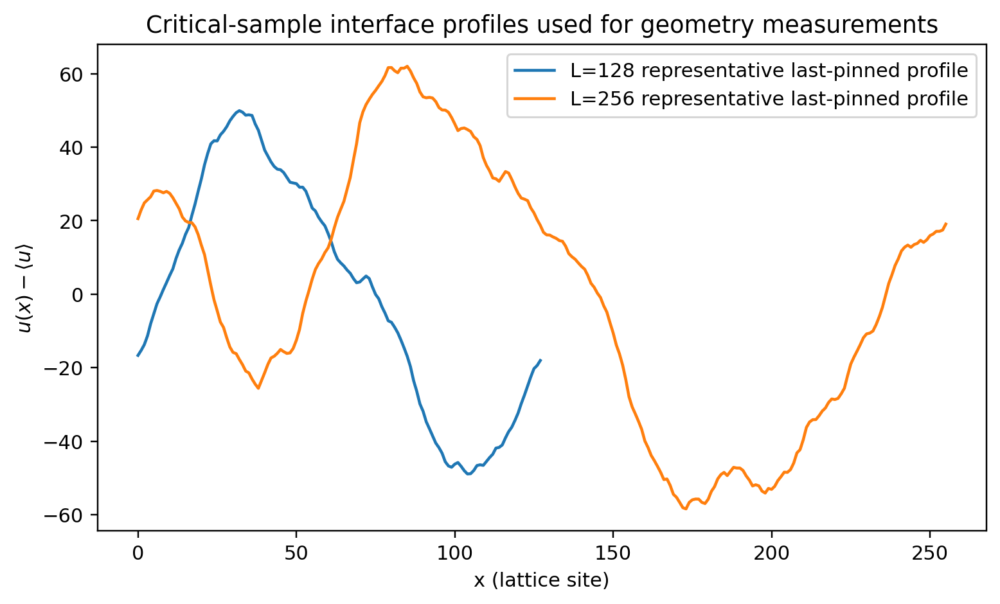
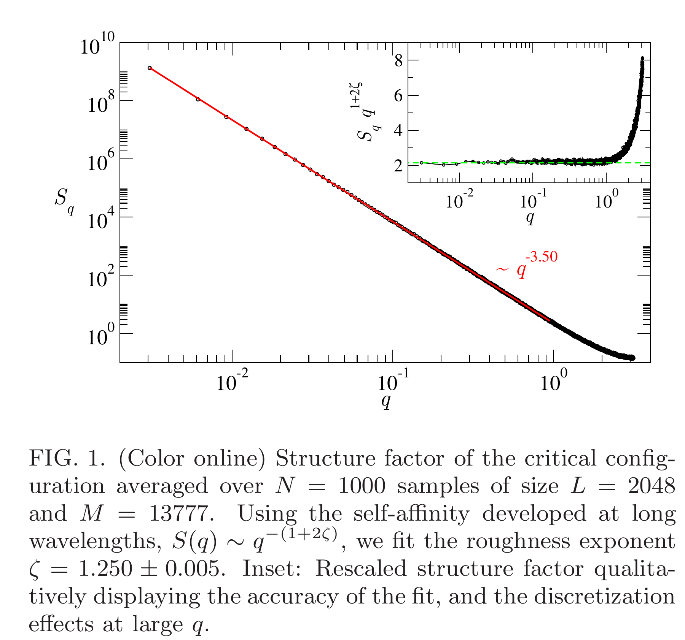
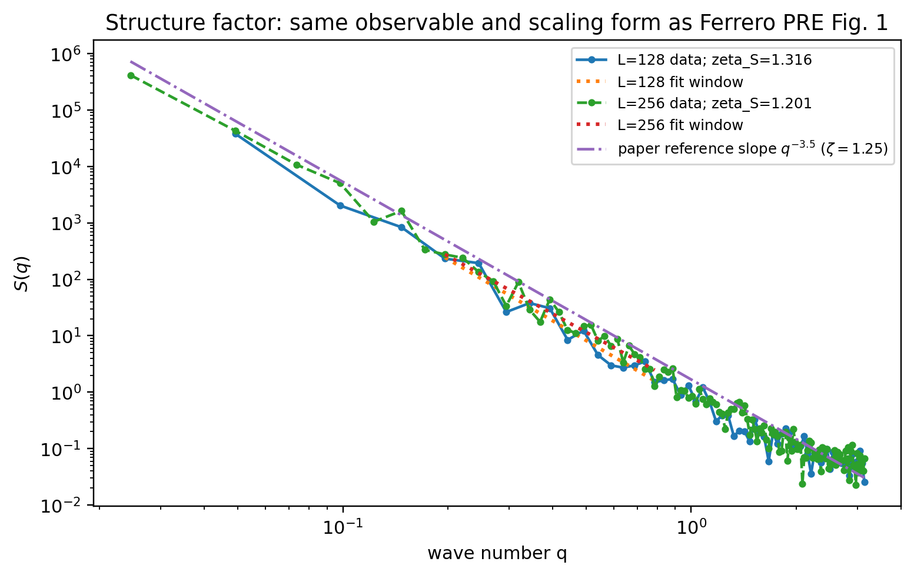
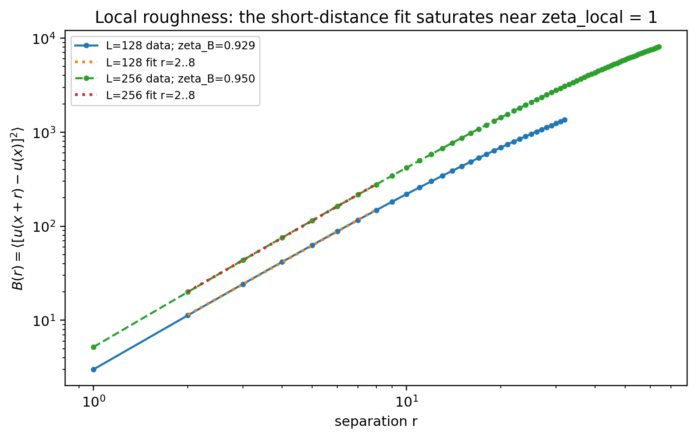
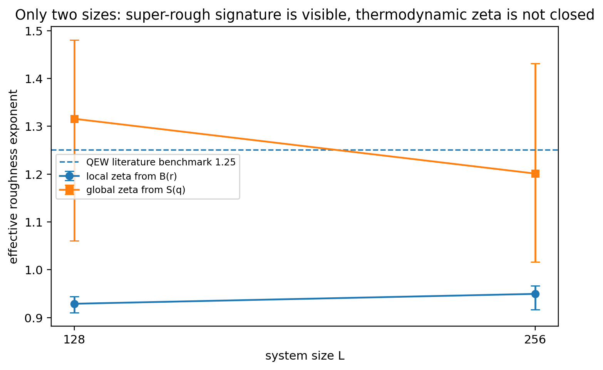

Learning Sliding Ferroelectricity / 复现实验室 / 第 10 课
真实模拟图论文原图完整裁切S(q) 同量对照
别先看 ζ 数字：先看一条墙，再看它的 S(q)
这一课不靠“结论卡”判断粗糙度。所有数值图都由 lesson10_superrough_zeta.py 实际运行生成。读图顺序只有一条：最后钉扎壁形貌 → 论文的 structure factor（结构因子） → 我们的结构因子 → 局域 B(r) → 尺寸依赖。
1 · 墙长什么样u(x) 是真正被分析的对象。
2 · 论文测什么Ferrero PRE Fig.1 用 S(q) 读取全局粗糙度指数 ζ。
3 · 我们测同一个量同样画 S(q)–q，并标出实际拟合区间。
4 · 再看 B(r)super-rough（超粗糙）时，局域指数不必等于全局 ζ。
0 · 先看模拟里真正的畴壁
下面不是示意线。它是脚本分别在 L=128 和 L=256 的两个独立 quenched disorder（淬火无序）样本中找到的最后钉扎构型，减去质心后直接画出的 u(x)。

先建立直觉：ζ 不是“墙看起来有多弯”的肉眼评分。它描述粗糙度如何随观察尺度增长，因此必须进入 B(r) 或 Fourier space（傅里叶空间）的 S(q)。
1 · 论文到底怎么测全局粗糙度？

S(q) ∼ q−(1+2ζ) → log–log slope = −(1+2ζ)
所以这一课和论文最强的对应关系不是“都在谈粗糙度”，而是：横轴都是 q，纵轴都是 S(q)，ζ 都从双对数斜率读出。
2 · 我们的 S(q)：现在可以和论文做同一可观测量对照

论文
精确临界构型；L=2048；N=1000。
我们
直接弛豫得到的最后钉扎样本；L=128/256；每个尺寸 6 个独立无序样本。
能比较什么
可观测量、标度形式和有效斜率；不能比较 S(q) 的绝对高度。
| L | S(q) 给出的全局 ζ | 样本自助法 95% 区间 |
|---|---|---|
| 128 | 1.315621 | [1.060960, 1.480197] |
| 256 | 1.201060 | [1.016524, 1.431058] |
3 · 那 B(r) 为什么只有约 1？
实空间高度差关联 B(r) 是另一种粗糙度估计量：
B(r) = ⟨[u(x+r) − u(x)]²⟩

这里“不相等”恰恰是本课要验证的物理。 对超粗糙界面，全局 ζ>1 时，局域高度差指数会饱和在约 1；因此 B(r)≈1 与 S(q)≈1.2–1.3 不是两个算法互相打架。
为防止把估计量错误误叫成超粗糙，脚本先生成目标 ζglobal=1.25 的合成 Fourier 界面：同一分析流程得到 ζB,local=0.951442、ζS,global=1.223335，已知答案测试通过。这个合成测试只是代码校验，不是物理数据。
4 · 最后看尺寸依赖：为什么仍不能宣布 ζ=1.25？

小尺寸 QEW 超粗糙特征：通过。 当前数据确实表现出“局域 ζ≈1、全局 ζ>1”的估计量结构。
热力学 ζ 闭合：未通过。 |ζS(128)−ζS(256)|=0.114561，高于预先登记的 0.10 判据；目前只有两个尺寸、每个尺寸 6 个独立无序样本，也远小于论文计算规模。因此不能挑出 1.316 或 1.201 中的任何一个，声称已经复现普适 ζ=1.25。